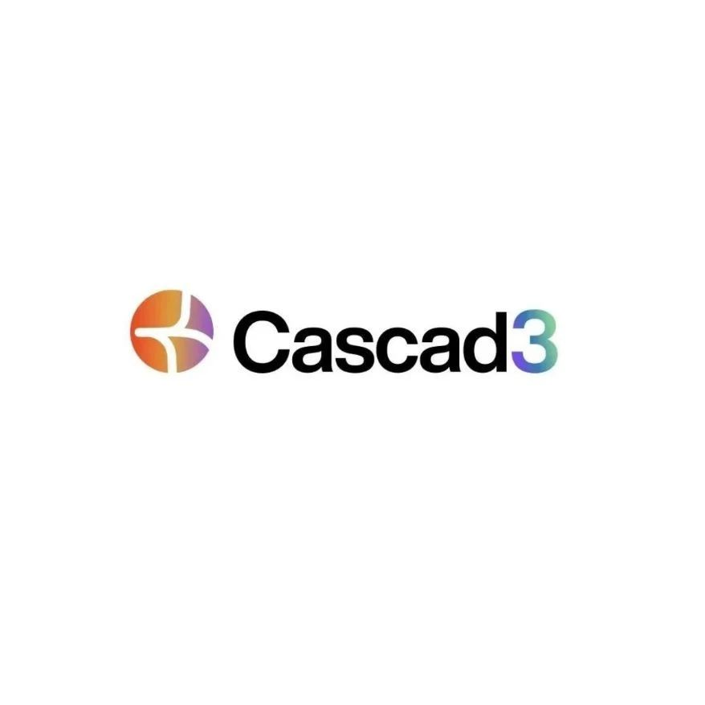

SeeDAO 孵化官宣 | Cascad3
作者: Shawn
分类:
SeeDAO孵化
Cascad3是一个专门为社区共创IP服务的协作平台，类似 Mirror，内容存储在 Arweave。

Cascad3是一个专门为社区共创IP服务的协作平台，类似 Mirror，内容存储在 Arweave。比 Mirror 多了一套原创的分形结构创作者经济系统，帮助共创IP达到公平与自动的分润。社区可以使用Cascad3生成创意图谱，直观展示共创作品间的联系、创意来源于什么作品，便于共创者之间的协作与内容消费者浏览。目前已有多个社区成为早期用户，包括 Arweave Wiki，SeeDAO，BabelDAO，PermaDAO 等。Cascad3 目前仍然在内测阶段，预计会在9月份发布公测。创作者经济中，共创协作是很重要的一部分，行业一直缺少协作平台，能够在二创过程中，确保收益能够自动回溯并分配给原创作者。Mirror 等内容发布平台无法满足要求。SeeDAO 一直在寻找这样的工具。今年 4 月，SeeDAO 和 Cascad3 团队一起探讨，如何能够开发一个通用平台，让每个社区都能够一键创建自己的，搭载了 Cascad3 创作者经济系统和分润模型的共创协作平台。SeeDAO 也成为了 Cascad3 的冷启动社区用户。如果共创者之间不存在一个公平的分润机制，创作自由和经济收益将难以两全。SeeDAO 非常开心能够跟 Cascad3 团队 一起探索，为 Web3 引入创新的共创经济模型和商业模式。Cascad3 也在 Babel Universe(巴别宇宙）科幻IP共创中，不断被打磨和改进。Cascad3 的创作者经济模型，让巴别宇宙中的作品可以互相标注启发关系，建立内容之间的联系，也为共创者之间的分润提供了一个范式。